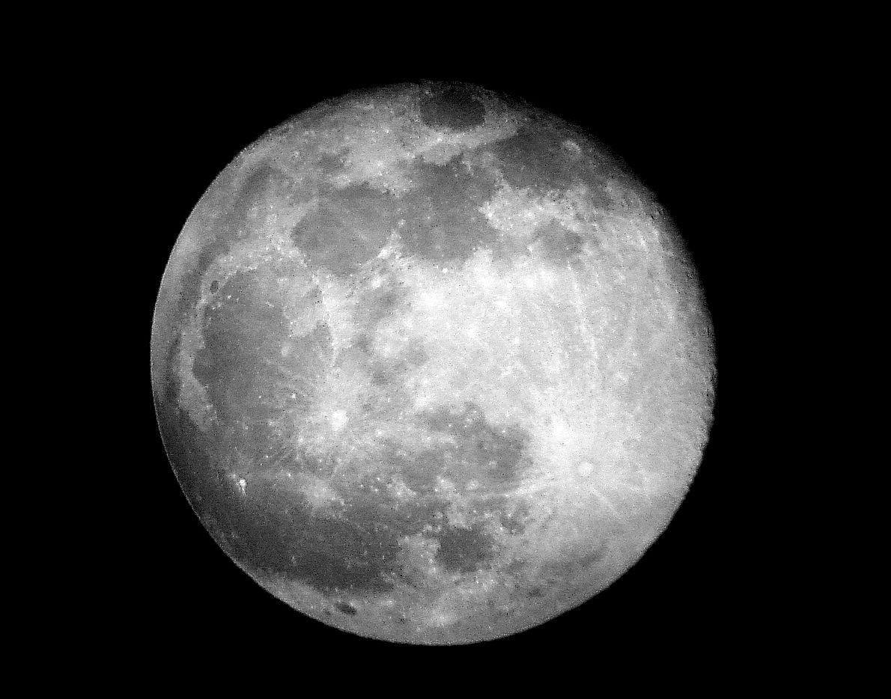

Meness ir Zemes vienīgais dabiskais pavadonis. Mēness kā sugas vārds apzīmē debess ķermeni, kas riņķo ap kādu zvaigzni vai planētu. Mēness attālums līdz Zemei nav konstants, vidēji tas ir 384 400 km. Mēness kustas ap Zemi pa nedaudz eliptisku orbītu. Tas apriņķo Zemi apmēram 28 dienās (precīzāk 27 dienās, 7 stundās un 43 minūtēs). Mēness ir Zemei tuvākais debess ķermenis, tas ir tikai 4 reizes mazāks par Zemi, tāpēc sistēmu Zeme-Mēness sauc arī par dubultplanētu. Mēness ir otrs spožākais debess spīdeklis pēc Saules, bet, atšķirībā no Saules, tas pats gaismu neizstaro. Mēness atstarotā Saules gaisma ir labi redzama naksnīgajās debesīs. Zeme Mēnesi apgaismo daudzreiz vairāk nekā Mēness Zemi. Uz Mēness nav gaismas kontrastu, atmosfēras kontrastu un ēnas kontrastu. Nokļūstot uz Mēness, no tā uz Zemes praktiski nekas nav saskatāms, jo Zemes virsmu vienmēr klāj biezs mākoņu slānis, kuram cauri nevar redzēt. Nīls Ārmstrongs un Bazs Oldrins 1969. gadā kļuva par pirmajiem cilvēkiem, kas nolaidās uz Mēness. Gribi uzzinat vairak par menesi spied Seit
